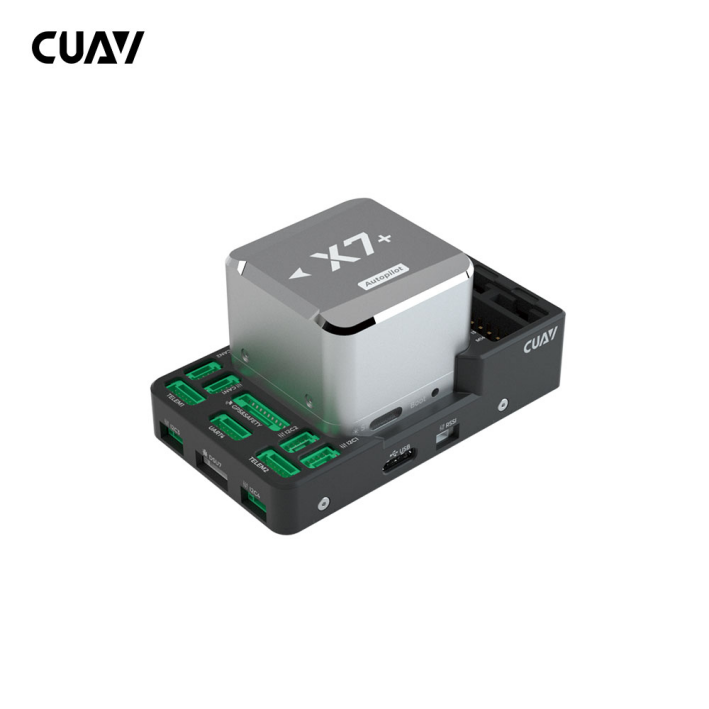
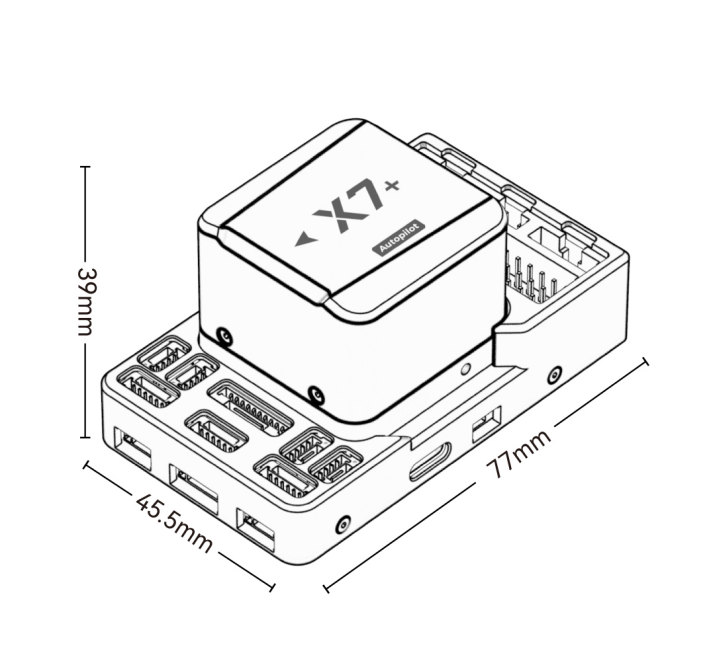
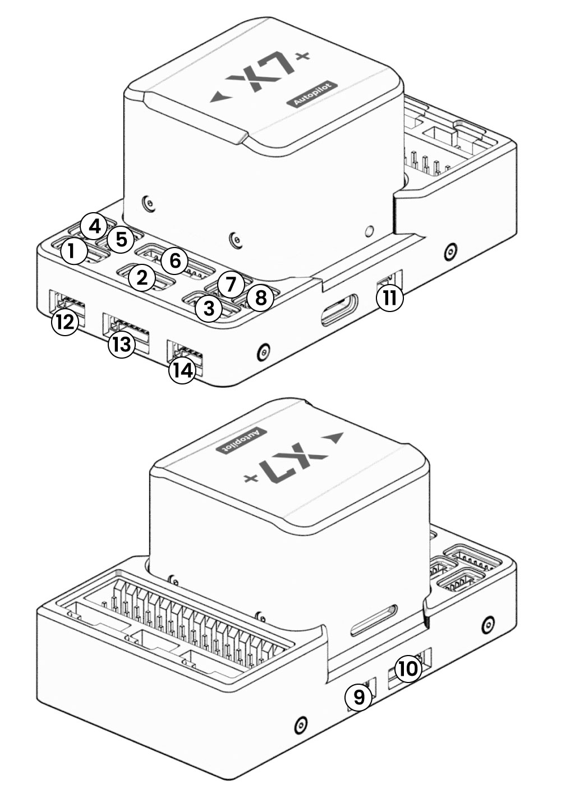
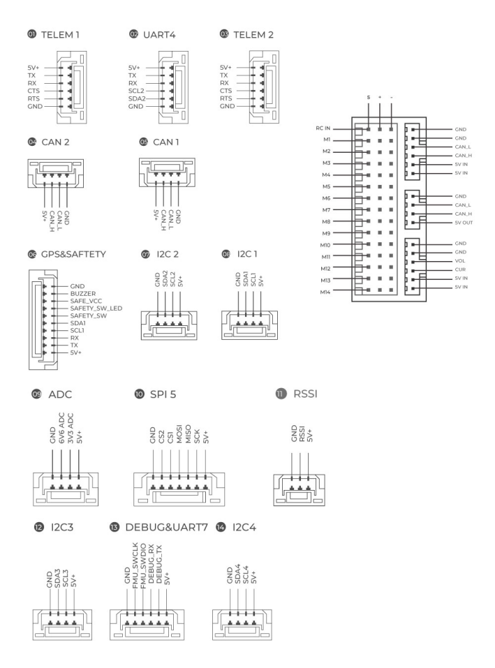
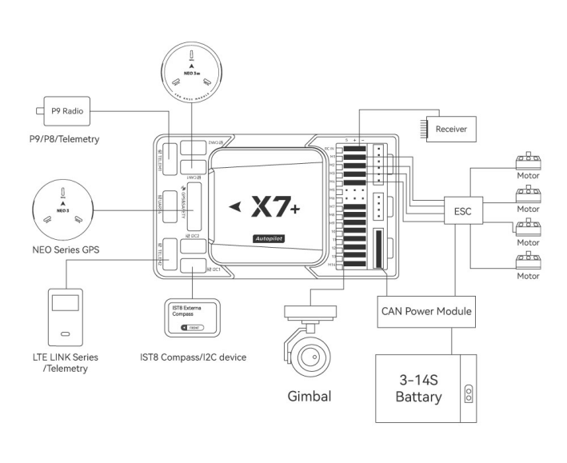

CUAV X7 Family Overview¶
{kind=link}
X7/X7 Pro/X7+/X7+ Pro® is an advanced autopilot family designed in-house by CUAV®. It uses a higher-performance STM32H7 processor and integrates industrial-grade sensors. Compared with previous autopilots, it has better performance and higher reliability.
The first generation autopilots (X7/X7 Pro) have been updated with new sensors, providing the same high performance, but with more reliable source of supply, and some improvements to allow Bi-dir DShot and servo rail voltage monitoring.
The modular design allows users to customize the baseboard and is fully compatible with the CUAV V5+ carrier board. The X7+/X7+ Pro are ideal for academic research and commercial systems integration.
Where to Buy¶
Features of CUAV X7 Series¶
CUAV X7 |
CUAV X7 Plus |
CUAV X7 Pro |
CUAV X7 Plus Pro |
|
|---|---|---|---|---|
Processor |
STM32H743 |
|||
Sensors |
BMI088 |
ICM42688-P |
ADIS16470 |
ADIS16470 |
ICM20689 |
ICM20689 |
BMI088 |
ICM42688-P |
|
ICM20649 |
ICM20689 |
ICM20649 |
ICM20689 |
|
MS5611*2 BAROs |
||||
RM3100 Compass |
||||
PWM outputs |
14 |
14 |
14 |
14 |
Bidi DShot outputs |
6(M9~M14) |
12(M1~M12 ) |
6(M9~M14) |
12(M1~M12 ) |
Servo voltage monitor |
NO |
YES(9.9V max) |
NO |
YES(9.9V max) |
Operating Voltage |
4.3~5.4V （USB:4.75~5.25V) |
|||
Power monitor |
2(1 analog power monitor, 1 DroneCan power monitor) |
|||
Interfaces¶
14 PWM servo outputs（12 support DShot）
Analog/ PWM RSSI input
2 GPS ports(GPS and UART4 ports)
4 I2C buses(Two external I2C ports)
2 CAN bus ports
2 Power ports(Power A is an analog PMU interface, Power C is a DroneCAN PMU interface)
2 ADC inputs
1 USB-C port
Other
Weight: 101g（X7+ Pro：105g）
Operating temperature: -20 ~ 80°c（Measured value）
Size and Pinouts¶
  {kind=link}
{kind=link}
{kind=link}
Default UART Order¶
SERIAL0 = console = USB (MAVLink2)
SERIAL1 = Telemetry1 (MAVlink2 default)= USART2 DMA-enabled
SERIAL2 = Telemetry2 (MAVlink2 default)= USART6 DMA-enabled
SERIAL3 = GPS1 = USART1
SERIAL4 = GPS2 = UART4
SERIAL5 = USER = UART8 (not available except on custom carrier boards) DMA-enabled
SERIAL6 = USER = UART7
SERIAL7 = USB2 (Default protocol is MAVLink2)
Serial protocols can be adjusted to personal preferences.
PWM Output¶
The CUAV X7+/X7+ Pro supports up to 14 PWM outputs. All 14 outputs support all normal PWM output formats.All outputs, except 13 and 14, also support DShot.
The 14 PWM outputs are in 4 groups:
Outputs 1, 2, 3 and 4 in group1 (these also support Bi-dir DShot if the Bi-Dir firmware version is used)
Outputs 5, 6, 7 and 8 in group2
Outputs 9, 10, 11 and 12 in group3
Outputs 13 and 14 in group4（NO DMA)
ALL outputs within the same group need to use the same output rate and protocol. If any output in a group uses DShot then all channels in that group must use DShot.
GPIOs¶
The 14 outputs can be used as GPIOs (relays, buttons, RPM etc). To use them you need to set the output’s SERVOx_FUNCTION to -1. See GPIOs page for more information.
The numbering of the GPIOs for use in the PIN parametersin ArduPilot is:
pins:
PWM1(M1) 50
PWM2(M2) 51
PWM3(M3) 52
PWM4(M4) 53
PWM5(M5) 54
PWM6(M6) 55
PWM7(M7) 56
PWM8(M8) 57
PWM9(M9) 58
PWM10(M10) 59
PWM11(M11) 60
PWM12(M12) 61
PWM13(M13) 62
PWM14(M14) 63
Analog inputs¶
The CUAV X7+/X7+ Pro has 2 analog inputs, one 6V tolerant and one 3.3V tolerant
ADC Pin18 -> ADC 6.6V Sense
ADC Pin4 -> ADC 3.3V Sense
Analog 3.3V RSSI input pin = 6
Battery Monitor¶
The autopilot includes a DroneCAN power module and battery monitor, CUAV CAN/DroneCAN Power Module. Connect to the Power C port and its already pre-configured for use. If you are using an analog battery monitor instead, connect to the Power A connector and set the following parameters (if used as second monitor use the BATT2 parameters instead):
BATT_MONITOR = 4
BATT_CURR_PIN = 17
BATT_VOLT_PIN = 16
Set the BATT_AMP_PERVLT and BATT_VOLT_MULT as required for the analog PMU used.
RC Input¶
The RCIN pin, which by default is mapped to a timer input, can be used for all ArduPilot supported receiver protocols, except CRSF/ELRS and SRXL2 which require a true UART connection. However, FPort, when connected in this manner, will only provide RC without telemetry.
To allow CRSF and embedded telemetry available in Fport, CRSF, and SRXL2 receivers, a full UART, such as SERIAL6 (UART7) would need to be used for receiver connections. Below are setups using Serial6.
SERIAL6_PROTOCOL should be set to “23”.
FPort would require SERIAL6_OPTIONS be set to “15”.
CRSF would require SERIAL6_OPTIONS be set to “0”.
SRXL2 would require SERIAL6_OPTIONS be set to “4” and connects only the TX pin.
Any UART can be used for RC system connections in ArduPilot also, and is compatible with all protocols except PPM. See Radio Control Systems for details.
The power rail associated with this connector position is powered via USB or PMU.
Typical Wiring Diagram¶
{kind=link}
Loading Firmware¶
The board comes pre-installed with an ArduPilot compatible bootloader, allowing the loading of xxxxxx.apj firmware files with any ArduPilot compatible ground station.
Firmware for these boards can be found here in sub-folders labeled starting with “CUAV-X7”. For the Bi-directional DSHot capable firmware (Outputs 1-4), the sub-folder is labeled starting with “CUAV-X7-bdshot”
Flight video¶
More Information¶
[copywiki destination=”plane,copter,rover,blimp”]